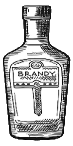
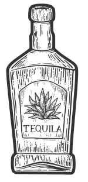
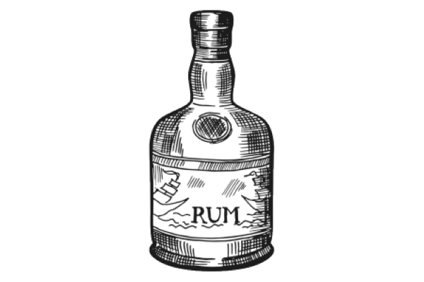
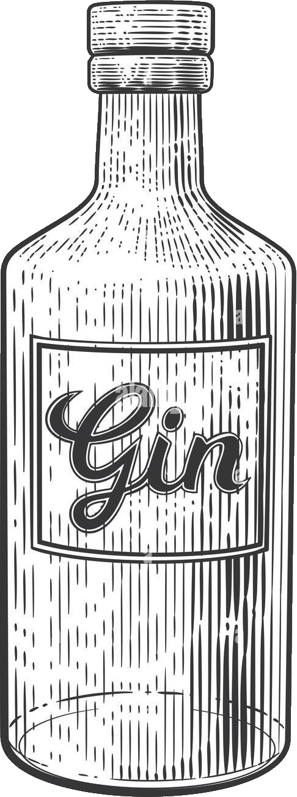
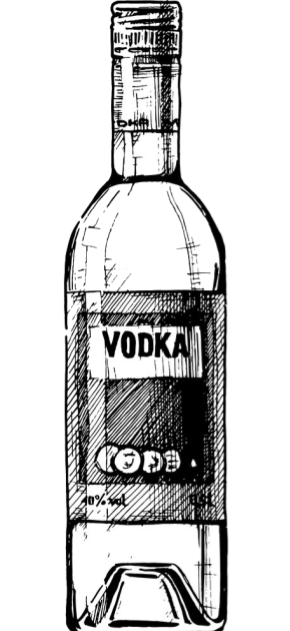
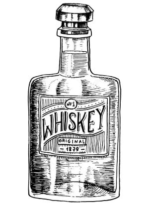

Brandy is distilled from fruit like wine grapes, essentially
making it distilled wine. Not just grape wine, but any fruit
wine such as apple, apricot, cherry, and peaches. Brandy
varies by style, and is typically aged in oak and often
blended. It can be made anywhere in the world.


Tequila is distilled from the fermented juices of the blue
agave plant. Agave can yield different flavors depending
on where the agave is grown in Jalisco. Its flavor is also
dependant upon whether it is aged in a wood barrel or
not. This factor paired with the length of time spent in
the barrel can yield different styles of tequila:
Blanco, Reposado, Añejo, and Extra Añejo.
Rum is distilled from a form of sugar, usually sugar cane or
molasses. The sweet toasted sugar flavor can vary by style
and region. There are two main types of rum: White/Light
and Dark. White is aged in stainless steel tanks while Dark
rum is aged in oak barrels. Other types include Spiced,
Flavored, and Over-Proof. Its naturally sweet flavor makes
it one of the most versatile spirits for mixing.


Gin is distilled from neutral grains such as barley, corn, rye,
and wheat. Its flavor comes from botanicals where juniper
is required, but other botanicals can be added like citrus,
cinnamon, and liquorice, etc.The neutral grain makes the gin
dry, but gives it an herbal character.
The types of gin include
London Dry, Plymouth, Old Tom, Genever, and New
American.
Vodka can be distilled from any agricultural product that
contains sugar or starch. Neutral grains are most popular
like rye, corn, and wheat. Vodka can also be gluten-free
when it is made from potatoes. Vodka can be flavored
anywhere from sweet to savoury and even fruit to
herbal. The neutral base makes it extremely
versatile spirits.


Whiskey is an aged spirit made from cereal grain; most
use corn, wheat, rye, oats, or barley. Sometimes a
combination is used to create more in-depth flavors.
Flavor is also dependant upon the type of oak and
length of time the whiskey spends in barrel. The different
types of whiskey include Scotch, Irish, Canadian, Japanese,
bourbon, and Tennessee.